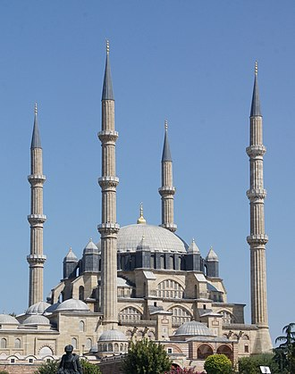

Selimiye Camiî, Osmanlı padişahı II. Selim döneminde Mimar Sinan'ın yaptığı ve Osmanlı'nın önceki başkenti Edirne'de bulunan bir külliyedir. Mimar Sinan'ın 80 yaşında yaptığı ve "ustalık eserim" şeklinde nitelendirdiği Selimiye Camii, gerek Mimar Sinan'ın, gerek Osmanlı mimârîsinin en önemli eserleri arasında sayılır.
Caminin kitâbesine göre, yapımına 1568 (Hicrî: 976) yılında başlanmıştır. Caminin 27 Kasım 1574 Cuma günü açılması planlanmış olsa da ancak II. Selim'in ölümünün ardından 14 Mart 1575'te ibadete açılmıştır.
Mülkiyeti Sultan Selim Vakfı’ndadır. Bugün şehrin merkezinde bulunan caminin yapıldığı alanda inşasına Süleyman Çelebi devrinde başlanan, Yıldırım Bayezid devrinde geliştiririlen Edirne'nin ilk sarayı (Saray-ı elik) ve Baltacı Muhafızları haremi bulunmaktaydı. Kaynaklarda söz konusu bu alandan Sarıbayır ya da Kavak Meydanı isimleriyle de bahsedilir.
2000'de UNESCO tarafından Dünya Mirası Listesi'ne dahil edilen Selimiye Camii ve külliyesi, 2011'de ise Dünya Mirası olarak tescil edildi.
